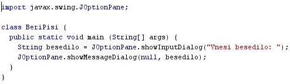
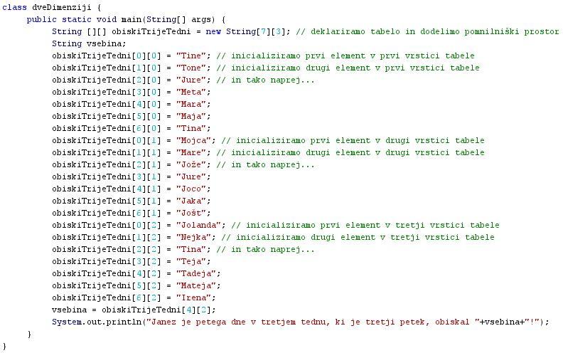
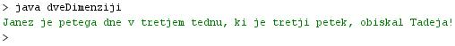

METODE
- V programskem jeziku Java smo že spoznali nekaj metod:
- Izpis besedila na zaslon: uèna enota št. 1 in 2 - System.out.println("Niz");
- Izpis okna za vnos besedila: uèna enota št. 3 - JOptionPane.showInputDialog("Vnesi besedilo: ");
- Izpis okna z obvestilom: uèna enota št. 3 - JOptionPane.showMessageDialog(null, besedilo);
- Metode za delo z nizi: uèni enoti 9 in 10 - .length();, .charAt(4);, .substring(5,8);, indexOf("um");, itd..
- Za temi oznakami se skriva programska koda, ki omogoèa izvajanje nalog, za katere te metode uporabljamo.
- Metode so torej kratki programèki, katerih zgradbe pa ne vidimo.
- Te metode torej klièemo v naše programe, kadar potrebujemo izpis besedila na zaslon ali pa okna za vnašanje ali izpis sporoèil.
- Ker so metode programèki, ki jih klièemo v druge programe, so torej del teh nadrejenih programov.
- Ker so metode podrejene programom, v katere jih klièemo, jih zato imenujemo tudi podprogrami.
- Metode vedno opravijo neko manjšo nalogo v okviru našega programa.
- Pogostokrat jih uporabimo za izraèun kakšne vrednosti, ki jo nato te metode vrnejo v glavni ali nadrejeni program.
- Metode zato imenujemo tudi funkcije.
- Metode, ki smo jih spoznali do sedaj, že obstojajo. Shranjene so v tako imenovanih knjižnicah.
- Zato moramo pri pisanju programov navesti tudi knjižnice, iz katerih bomo klicali v naše programe metode, ki jih te knjižnice vsebujejo.
- To smo storili v vaji št. 3 s uvozom knjižnice "javax.swing".
- Knjižnica "javax.swing" vsebuje metodo za vnos besedila in izpis sporoèil. To je metoda "JOptionPane".
- Nekatere knjižnice in nekatere v njih vkljuèene metode bomo postopoma spoznavali v uènih enotah, ki sledijo.
- Metode lahko pišemo tudi sami.
- Metode pišemo sami, kadar pišemo dolge programe, s katerimi rešujemo zapletene in sestavljene probleme.
- Sestavljene pobleme razstavimo na manjše in manj težke pobleme.
- Za vsakega od teh manjših in manj težkih problemov napišemo kratek programèek, ki ta problem rešuje. To je naša metoda.
- V nadrejeni glavni program nato poklièemo te naše metode na tistem mestu, kjer jih potrebujemo.
- Nadrejeni glavni program vsebuje zaradi uporabe metod manj kode in je bolj pregleden.
-
VAJA 30:
- V okolju za pisanje izvorne kode v jeziku Java, za prevajanje in za interaktivno delo zapiši zgornji program "dveDimenziji". Pomagaj si s sliko in z besedilom prejšnje uène enote.
- Kodo lahko tudi kopiraš iz te datoteke in jo prilepiš v okolje, v katerem pišeš programèke. Pozor: koda, ki jo boš kopiral/a, vsebuje eno, dve, tri ali štiri napake. Èe želiš, da bo program deloval, moraš napake odkriti in jih odpraviti.
- Izvorno kodo shrani pod imenom "ImePriimek30.java". ImePriimek je seveda tvoje lastno ime in priimek.
- Datoteko "ImePriimek30.java" prevedi.
- Prevedeno datoteko zaženi, preveri rezultat v interaktivnem oknu in poklièi profesorja, da vidi rezultat.
1. Vprašanja:
1. Kaj so metode?
2. Kako metode imenujemo še drugaèe?
3. Kaj dosežemo s pomoèjo metod?
4. Kje so že pripravljene metode shranjene?
5. Kdaj pišemo sami lastne metode?
6. Zakaj v dosedajšnjih vajah še ni bilo potrebe po pisanju lastne metode?
7. Kakšno tabelo smo izdelali v vaji te uène enote; enodimenzionalno ali dvodimenzionalno?
8. Koliko indeksov vsebuje tabela, ki smo jo izdelali v vaji te uène enote?
9. Zapiši ime prijatelja/prijateljice od Janeza, ki se nahaja v tabeli v vaji te uène enote na mestu, na katerega kažeta indeksa 0 in 2.
10. Zapiši ime prijatelja/prijateljice, ki ga/jo je Janez obiskal v ponedeljek v tretjem tednu svoje prijateljske turneje.
2. Zapiši od ene do pet kljuènih besed, ki povzemajo vsebino te uène enote.
3. Povezave do dodatnih informacij.
Gradiva na spletnih straneh fakultete za matematiko in fiziko v Ljubljani.
Spletni priroènik proizvajalca programskega okolja Java. To je podjetje Sun.
|